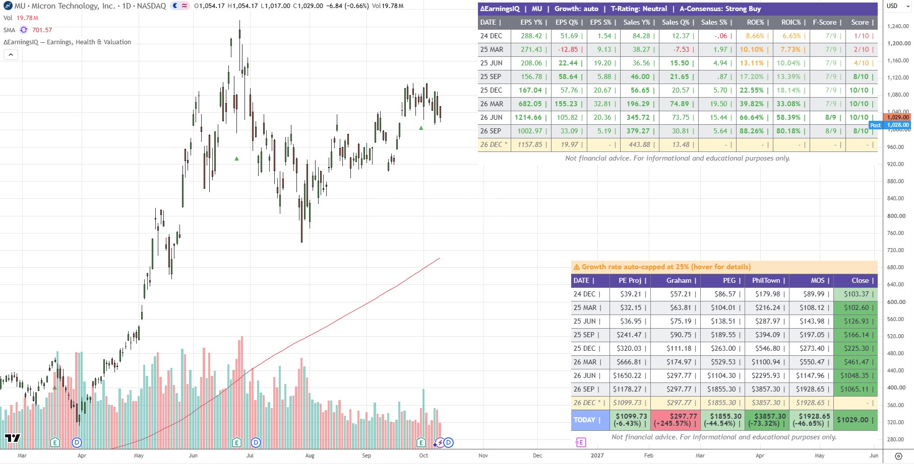
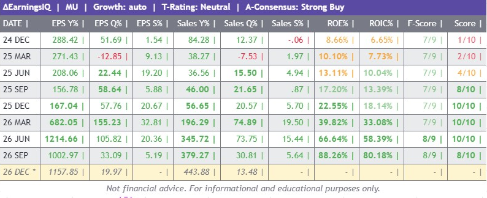
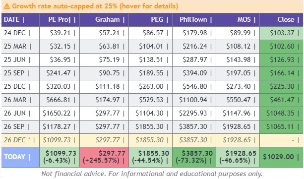
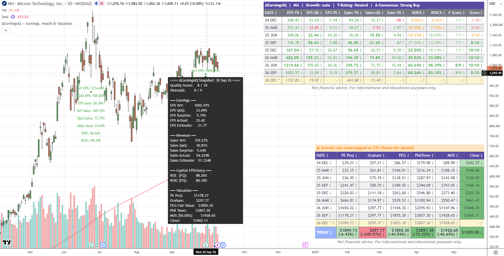
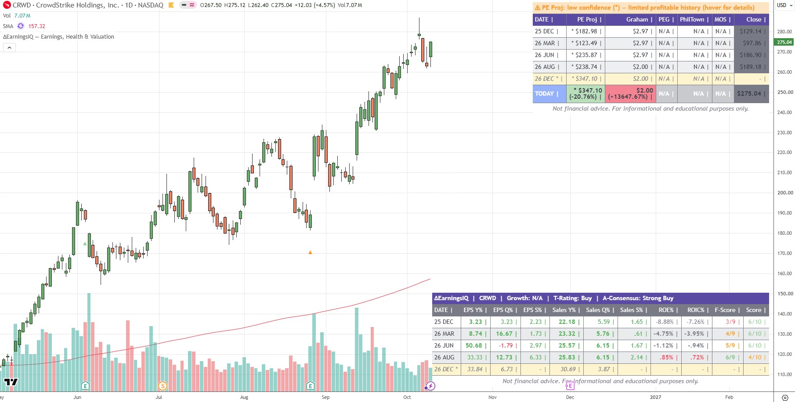
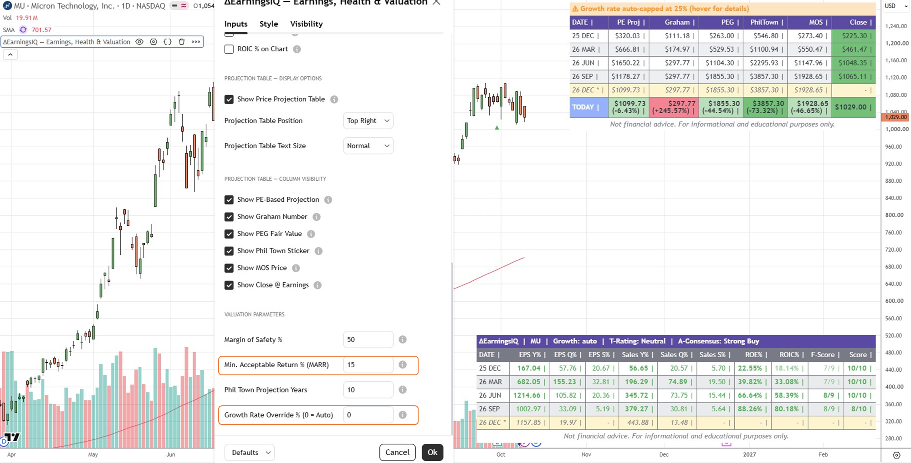
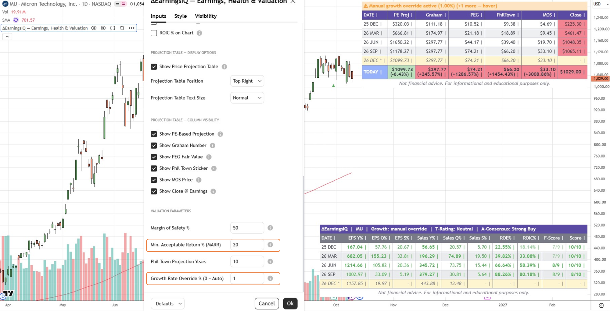
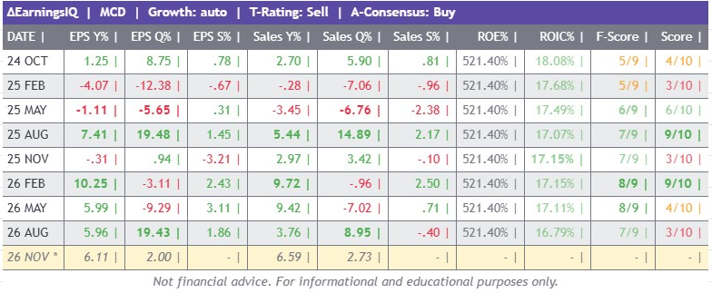

ΔEarningsIQEarnings, Health & Valuation
ΔEarningsIQ puts a stock's recent earnings reports, financial-health scores and five valuation models on your chart — two tables, plus a colour-coded marker on every earnings bar. It shows how the business is trending and how today's price compares with several fair-value lenses. It does not tell you when to buy or sell.
What is ΔEarningsIQ?
ΔEarningsIQ answers three questions about a stock, quarter by quarter: is the business accelerating, is it financially healthy, and is the price reasonable?
Everything is built from data TradingView already holds for the symbol — reported and estimated EPS and revenue, return on equity and invested capital, the Piotroski F-Score, forward PE, book value and the Graham Number — and is drawn directly on the chart.
What you get
- Main Table — up to eight past earnings periods with EPS and Sales growth (YoY, QoQ, surprise), ROE, ROIC, Piotroski F-Score and a composite Quality Score, plus the next expected report. See §3.
- Price Projection Table — for each period, five fair-value estimates (PE Projection, Graham, PEG, Phil Town Sticker, Margin-of-Safety price) next to the actual close, plus a
TODAYrow. See §3 and §4. - Earnings Marker — a ▲ or ▼ under or over every earnings bar, coloured by that quarter's Quality Score, with a full snapshot on hover.
- Optional on-chart labels — individual metrics (EPS YoY, ROIC and so on) printed under the earnings bar.
- Alerts — 4 ready-made alert conditions, plus custom threshold alerts on 10 metrics. See §6. See §6.
ΔEarningsIQ does not generate buy or sell signals. Fair-value models are only as good as their assumptions, and every one of them can be wrong. Use the tables to ask better questions about a company, not to skip the research.
Requirements
- Symbols with reported earnings. Works on stocks that have quarterly EPS and revenue in TradingView. On ETFs, indices, crypto and similar symbols both tables show No earnings data available.
- Not compatible with the Pine Screener. The script makes more data requests than the Screener allows. Use chart alerts instead (§6).
- Some metrics may be N/A. ROIC, ROE and the Piotroski score are supplied by TradingView and are missing for some symbols (commonly financial companies and some smaller non-US stocks). The rest of the dashboard keeps working.
Core Concepts
A few ideas explain almost everything you will see on screen.
Three lenses
| Lens | Question it answers | Where you see it |
|---|---|---|
| Momentum | Are earnings and sales growing faster or slower, and is the company beating expectations? | EPS / Sales YoY, QoQ and Surprise columns; Quality Score |
| Health | How efficiently does the business use capital, and how sound is its balance sheet? | ROE, ROIC and Piotroski columns |
| Valuation | What do several fair-value methods say the stock is worth versus its price? | Projection Table; marker tooltip |
One row = one reported quarter
Each row is an earnings report. The date label is YY MMM (for example 24 MAR) and refers to the chart bar on which that report's data appeared. The script keeps the eight most recent periods. Past Earnings Rows to Display only trims how many are drawn: the growth rate always uses the last four stored periods and the historical-PE average uses all of them, whatever you display.
How growth is measured
- YoY compares a period with the same quarter one year earlier (four reports back).
- QoQ compares a period with the report immediately before it.
- Surprise is
(Actual − Estimate) / |Estimate| × 100. Positive is a beat, negative a miss. - Percentage changes divide by the absolute value of the base, so a move from a loss to a smaller loss reads as positive.
- Which EPS? Reported EPS is used when available, otherwise the analyst estimate, otherwise TradingView's standardized EPS.
Colours and bold text
- Growth and surprise cells are green when positive, red when negative and grey when unavailable.
- ROE, ROIC, Piotroski and Quality Score use threshold colours (see §3).
- Bold means the value improved versus the row above it. Surprise columns are never bold because each surprise stands alone.
The growth rate behind PEG and Phil Town
PEG and Phil Town both need a forward growth rate. By default ΔEarningsIQ derives one automatically as the average EPS YoY growth of the last four quarters, limiting any single quarter's contribution and ignoring periods where the earnings base is near zero and applying a ceiling of 25% so that a single outstanding stretch cannot produce fantasy valuations. You can replace it with your own number (§5). The same current growth rate is applied to every row of the projection table; only the EPS and price inputs differ by row.
Nearly every cell carries a tooltip. Hover over a date to see the raw inputs for that period, over a column header for the definition, and over the banner rows for warnings. Much of the detail lives there rather than on the face of the table.
Dashboard Tour
Two movable tables and a marker on the chart. Here is what every part shows.
The full view

The full dashboard on a daily chart: green ▲ markers on earnings bars, Main Table (top right) and Projection Table (bottom right).
Main Table — EPS, Sales & Health

Main Table with short headers on. The yellow italic row is the next expected report.
Banner row
The top row shows ΔEarningsIQ | TICKER | Growth mode | T-Rating | A-Consensus.
- Growth reads auto, manual override or N/A.
- T-Rating is TradingView's technical rating (Strong Sell to Strong Buy) for the current chart timeframe, so it changes when you change timeframe.
- A-Consensus condenses the analyst recommendation counts into Strong Buy, Buy, Hold, Sell or Strong Sell.
- Hover the banner for your MARR and MOS settings, the number of quarters loaded, the MA and oscillator ratings and the full analyst breakdown.
Columns
Headers below are shown in full form. With Short Table Header on (as in the screenshot) they read EPS Y%, Sales Q%, F-Score, Score and so on.
| Column | What it shows | Reading it | Colour / bold | Notes |
|---|---|---|---|---|
| DATE | Earnings bar, YY MMM | Hover for every raw input of that period | — | Always shown |
| EPS YoY % | EPS vs same quarter last year | Primary growth read | Green / red; bold if higher than prior row | |
| EPS QoQ % | EPS vs previous quarter | Sequential momentum; seasonal businesses swing | Green / red; bold if higher | |
| EPS Surprise % | Actual vs analyst estimate | Positive = beat | Green / red | Needs both actual and estimate |
| Sales YoY / QoQ / Surprise % | Same three measures for revenue | Top-line confirmation of the EPS story | Green / red; YoY and QoQ bold when higher | |
| ROE % (FQ) | Net income ÷ shareholders' equity | Profit on shareholders' money only | Threshold colours; bold if improving | Grey when book value is negative |
| ROIC % (FQ) | Return on all invested capital (equity and debt) | Harder to inflate with leverage; consistently above 10% hints at a moat | Threshold colours; bold if improving | Negative means capital is being destroyed |
| Piotroski (FQ) | 0–9 financial-health score | Rising = improving health; falling = deterioration | Threshold colours; bold if improving | Less meaningful for unprofitable growth firms and financials |
| Quality Score | Proprietary composite, 0–10 | Blends capital efficiency, earnings momentum and revenue momentum into one number | Threshold colours; bold at 8+ | Measures momentum and quality; Piotroski measures health |
Future estimate row
When an analyst estimate exists for the next report, a yellow italic row marked with * appears at the bottom. It shows the expected report month, the EPS and revenue growth the estimates imply, and the countdown to the report in its tooltip. Surprise, ROE, ROIC, Piotroski and Quality Score show a dash because they cannot exist before the report.
Colour thresholds
| Metric | Bright green | Green | Orange | Red | Grey / dark red |
|---|---|---|---|---|---|
| ROE | > 20% | 15–20% | 5–15% | 0–5% | Grey: below 0% or negative equity |
| ROIC | > 20% | 10–20% | 5–10% | 0–5% | Grey: below 0% |
| Piotroski | 8–9 | 6–7 | 4–5 | 2–3 | Dark red: 0–1 |
| Quality Score | 8–10 | 6–7 | 4–5 | 0–3 | — |
When both are high, the business itself is efficient. When ROE is high but ROIC is low, debt or buybacks are doing the work. If ROE exceeds ROIC by more than 10 points, that period's tooltip adds a gap warning. In that case trust ROIC.
Price Projection Table

Projection Table. The orange banner is the growth-cap warning; the blue TODAY row shows each fair value and the percentage gap from the current price.
A second table shows what each valuation method said at each report, next to the price the stock actually traded at. Methods are explained in §4.
- Period rows use that quarter's TTM EPS, forward PE, book value and close. The Close cell is coloured against that row's Phil Town Sticker and MOS price: bright green at or below MOS, light green below Sticker, red above Sticker.
- Future row (yellow) applies the current close and latest fundamentals. It is a "where do things stand now" row, not an independent forecast, and its Close cell is a dash.
- TODAY row (blue label) is the most actionable row. Each cell shows the fair value and, beneath it, the percentage gap from today's price:
+%means the price is above that fair value,−%below. Each cell is coloured against its own fair value: bright green when the price is at or below that value after the margin-of-safety discount, light green when below the value, red when above it. - A
*in front of a PE Proj value marks a low-confidence estimate (see the warning banner below). - A cell showing
N/Ahas a reason in its tooltip (negative EPS, negative book value, missing forward PE and so on).
Warning banner
The top row of the projection table is blank when everything is normal. Otherwise it shows the most important warning, with a note if others are active; hover for the full list.
| Warning | Meaning | What to do | Affects | Common on |
|---|---|---|---|---|
| PE Proj: low confidence (*) | Trailing PE is very high, and either it is in line with the stock's own history (a persistent premium) or there are too few profitable prior quarters to judge. The historical average PE is used and every PE Proj value is marked *. | Treat PE Proj as a rough estimate; hover a cell to see which case applies. | PE Proj | Growth stocks with thin GAAP profits; recent profitability |
| Normalised PE in use | Trailing PE has spiked far above the stock's own history (or EPS is zero or negative with enough history), so the historical PE from profitable quarters replaces it. | Treat PE Proj as a rough estimate. | PE Proj | Cyclicals near a trough |
| Growth auto-capped at 25% | The auto growth rate hit its ceiling. | Projections may be understated for very fast growers; consider an override. | PEG, Phil Town, MOS | High-growth stocks |
| Manual growth override | You set the growth rate yourself. | Remember the numbers reflect your assumption, not the data. | PEG, Phil Town, MOS | Any, when set |
| Limited earnings data | Fewer than six quarters are available. | Averages rest on few points; be cautious. | All averages | Recent IPOs |
| Negative book value | Equity is negative, so Graham is undefined and ROE is distorted. | Use ROIC instead of ROE; ignore Graham. | Graham, ROE | Heavy buyback or debt-funded companies |
Earnings Marker

Hovering a marker opens the quarter's snapshot. The green labels at left are the optional on-chart labels, all eight switched on.
Every earnings bar gets a triangle. Direction and colour come from that quarter's Quality Score:
| Marker | Score | Meaning |
|---|---|---|
| ▲ bright green | 8–10 | Strong quarter |
| ▲ green | 6–7 | Solid quarter |
| ▲ orange | 4–5 | Mixed quarter |
| ▼ red | 0–3 | Weak quarter |
Bullish markers sit below the bar pointing up; bearish markers sit above the bar pointing down. Hover for a complete snapshot: Quality Score, Piotroski, EPS and Sales metrics with actual and estimate values, ROE, ROIC, all five valuation prices and the close.
On-chart labels
Eight optional labels (EPS YoY, QoQ, Surprise; Sales YoY, QoQ, Surprise; ROE; ROIC) print under the earnings bar, stacked downward in a fixed order, coloured with the same rules as the table. All are off by default; turn on only the few you care about, since they add up quickly on a busy chart.
Valuation Models
Five lenses on "what is it worth?". They use different assumptions on purpose: when several agree, that tells you more than any single number.
PE Projection
Idea: if the company delivers the earnings the market expects and investors keep paying the multiple they pay now, where would the price be?
Forward EPS = Close ÷ Forward PE(the earnings the market is pricing in)Trailing PE = Close ÷ TTM EPSPE Proj = Forward EPS × Trailing PE
When trailing PE is distorted, the stock's own historical trailing PE from profitable quarters is used instead. There are two outcomes. If trailing PE has spiked far above the stock's history, the result is treated as a normal normalised estimate. If it is persistently very high, or there are too few profitable quarters to judge, the same substitution is used but every value is marked * as low confidence. The warning banner says which applies. Best for steady earners; treat it as rough for cyclicals near a trough and for companies that have only just turned profitable.
Graham Number
Idea: the most a conservative, fundamentals-first investor should pay.
√(22.5 × EPS × Book Value per Share), where 22.5 is Benjamin Graham's ceiling of 15× earnings times 1.5× book. The value is supplied by TradingView and shown as N/A for negative EPS or negative book value. Poorly suited to high-growth or loss-making companies; best used as a conservative floor check.
PEG Fair Value
Idea: is the price justified by growth speed? A PEG of 1 means you pay a PE equal to the growth rate.
Fair Value = EPS (TTM) × Growth Rate (in %). For example, EPS of $4.00 and growth of 15 gives $60. Requires positive EPS and positive growth; otherwise N/A. Best for consistent growers, weak for slow or cyclical businesses.
Phil Town Sticker Price
Idea: project the business forward, then discount back to find what you can pay today and still earn your required return.
- Future EPS = EPS × (1 + growth)years
- Future PE = the lower of 2 × growth rate and the stock's historical average trailing PE (never below 5)
- Future Price = Future EPS × Future PE
- Sticker = Future Price ÷ (1 + MARR)years
Defaults are 10 years and a 15% minimum acceptable return (MARR). Because each stock's own history caps the future PE, two companies with the same growth rate get different stickers.
MOS Price
MOS Price = Phil Town Sticker × (1 − MOS%). At the default 50% it is your maximum buy price with a buffer in case the estimates are wrong: the business could be worth half your estimate and you would still break even.
Rule #1 investing asks that ROIC, revenue, EPS, book value and free cash flow have each grown above 10% a year for ten years before the Sticker Price is trusted. ΔEarningsIQ's ROIC and ROE columns give a partial view; use TradingView's Screener to check the rest.
Choosing between models
| Model | Best for | Weak for | Needs | Tilt |
|---|---|---|---|---|
| PE Proj | Steady earners | Cyclical troughs | Forward PE, positive-ish EPS | Market-implied |
| Graham | Mature, asset-backed businesses | Growth, loss-makers, buyback-heavy | Positive EPS and book value | Conservative |
| PEG | Consistent growers | Slow or cyclical | Positive EPS and growth | Growth-sensitive |
| Phil Town | Durable compounders | Unpredictable earnings | Positive EPS and growth | Very growth-sensitive |
| MOS | Setting a disciplined entry | — | A valid Phil Town value | Strictest |
Settings Reference
Settings appear in the indicator's Inputs tab in the groups below.
EPS Y%). Use it when the table is too wide for your chart.Alerts
The indicator cannot run in the Pine Screener, so alerts are the way to be told when a company's numbers cross a line you care about.
Preset alerts
Click the alarm-clock icon, choose ΔEarningsIQ as the condition and pick one of the named conditions below. "Latest" always means the most recent completed earnings period and updates automatically when a new quarter is reported.
| Condition | Fires when | Reads as |
|---|---|---|
| EPS Accelerating — YoY and QoQ Both Positive | Latest EPS YoY > 0 and EPS QoQ > 0 | Earnings momentum building |
| Revenue Accelerating — YoY and QoQ Both Positive | Latest Sales YoY > 0 and Sales QoQ > 0 | Revenue momentum building |
| Strong Quarter — EPS and Revenue Both Accelerating with Beats | EPS YoY > 25%, Sales YoY > 20%, and both EPS and revenue beat estimates | Everything firing at once |
| ROE/ROIC Divergence — Leverage Inflation Detected | ROE exceeds ROIC by more than 10 points | Leverage or buybacks inflating ROE; rely on ROIC |
Custom threshold alerts
For anything the presets do not cover, you can alert on a single metric crossing a number you choose. The metrics are hidden series, so they do not appear on the chart; they only appear in the alert dialog's condition list.
Available series
| Series name in the dropdown | What it holds | Units |
|---|---|---|
| EPS YoY % Latest | EPS growth vs same quarter last year | % (25 = 25%) |
| EPS QoQ % Latest | EPS growth vs previous quarter | % |
| EPS Surprise % Latest | Actual vs estimate, EPS | % |
| Sales YoY % Latest | Revenue growth vs same quarter last year | % |
| Sales QoQ % Latest | Revenue growth vs previous quarter | % |
| Sales Surprise % Latest | Actual vs estimate, revenue | % |
| ROE % Latest | Return on equity | % |
| ROIC % Latest | Return on invested capital | % |
| F-Score | Piotroski score | 0–9 |
| Score | Quality Score | 0–10 |
Step by step
- Make sure ΔEarningsIQ is on the chart of the symbol you want to watch.
- Click the alarm-clock icon (or right-click the chart) and choose Create Alert.
- In Condition, pick ΔEarningsIQ itself. The second dropdown then lists the series above and the four named presets; choose one of the series, not a preset.
- Choose an operator. Crossing Up / Crossing Down is usually what you want (see below).
- Set the right-hand side to Value and type your threshold, such as
30. - Set the trigger frequency and notification, then create the alert.
Examples
| Goal | Series | Operator | Value | Fires |
|---|---|---|---|---|
| EPS growth turns strong | EPS YoY % Latest | Crossing Up | 25 | When a new report lifts EPS YoY above 25% |
| Earnings miss | EPS Surprise % Latest | Crossing Down | −5 | When a new report misses by more than 5% |
| Quality deteriorates | Score | Crossing Down | 5 | When Quality Score drops below 5 |
| Health improves | F-Score | Crossing Up | 7 | When Piotroski reaches 8 or more |
| Capital efficiency | ROIC % Latest | Crossing Up | 15 | When ROIC moves above 15% |
These series only change when a company reports, so they sit at one value for weeks. Greater Than is true on every bar until the next report and can notify you repeatedly. Crossing fires once, on the report that moves the value across your threshold.
- Values are in percentage points, so type
25for 25%, not0.25. - If a metric is N/A for the symbol, its series is empty and the alert cannot fire.
- An alert watches one symbol. To monitor many stocks, create the alert on each (the indicator does not work in the Pine Screener).
- Menu wording differs slightly between TradingView versions and platforms; the idea is always indicator, series, operator, value.
"Latest" values do not change between reports, so a condition that is true stays true for weeks. Choose a trigger setting such as Only Once so you are not notified repeatedly for the same quarter.
Worked Examples
All examples use real screenshots: Micron (MU), CrowdStrike (CRWD) and McDonald's (MCD). They show how to read the dashboard and are not recommendations.
Example 1 — Reading a single quarter (MU, 26 SEP row)
From the Main Table: EPS YoY 1002.97, EPS QoQ 33.09, EPS Surprise 5.19, Sales YoY 379.27, Sales QoQ 30.81, Sales Surprise 5.64, ROE 88.26, ROIC 80.18, F-Score 8/9, Score 8/10.
- Momentum. EPS growth of 1,002.97% year over year is enormous, partly because the year-ago base was small. It is not bold: the row above showed 1214.66, so growth is still huge but cooling. Sales YoY is bold (379.27 vs 345.72), so revenue growth is still accelerating.
- Beats. Hover the marker: EPS came in at 33.42 against an estimate of 31.77 (a 5.19% beat) and revenue at 54.229B against 51.334B (5.64%).
- Efficiency. ROE 88.26% and ROIC 80.18% are both bright green and bold, meaning improving. The gap is about 8 points, under the 10-point threshold, so no divergence warning.
- Health and verdict. Piotroski is 8/9. The Quality Score is 8/10, down from 10/10 in the two previous quarters as growth rates cooled, which is why the marker is a bright-green ▲ (8–10) and not an outright 10.
A strong quarter, though one where the pace of growth has started to ease. Whether that matters depends on the price, which is Example 2.
Example 2 — Reading the TODAY row (MU, close $1,029.00)
The TODAY row shows each fair value, with the gap from the current price underneath:
| Model | Fair value | Gap | Colour | Why |
|---|---|---|---|---|
| PE Proj | $1,099.73 | −6.43% | Light green | Price is below the value, but not below half of it |
| Graham | $297.77 | +245.57% | Red | Price is far above the value |
| PEG | $1,855.30 | −44.54% | Light green | Below the value, above the value minus 50% |
| PhilTown | $3,857.30 | −73.32% | Bright green | Price is below half the Sticker |
| MOS | $1,928.65 | −46.65% | Light green | Below the MOS price, but not by another 50% |
The models disagree sharply. Graham is red because it depends on book value, which is typically small relative to earnings for a company with an ROE near 88%, so it tends to be a weak yardstick here. The Phil Town figures lean on the orange banner's message: growth was auto-capped at 25%, then compounded for 10 years. Micron is also a cyclical company, which is where Phil Town and PEG are weakest. PE Proj, which only assumes the market's expectations and the current multiple hold, puts the price within about 6% of fair value.
That spread, rather than any single cell, is the information. It shows the valuation hinges on the growth assumption, so test that assumption next (Example 4).
Example 3 — Low-confidence PE Proj on a barely profitable company (CRWD)

CRWD: the Projection Table (top right) flags PE Proj as low confidence with a *; the Main Table (bottom right) shows four reported quarters.
CrowdStrike has only just turned profitable, so its earnings are tiny compared with its price. Several things show on screen at once:
- The banner and the asterisks. PE Proj: low confidence (*) — limited profitable history means trailing PE is very high and there are too few profitable quarters to tell a spike from the norm. The historical multiple is used instead and every PE Proj value carries a
*. The $347.10 in the TODAY row (−20.76% against the $275.04 close) is a rough estimate, not a precise one. - Growth N/A. The header reads
Growth: N/A, and PEG, PhilTown and MOS are allN/A. There is no usable growth rate because the earnings base over the last four quarters is near zero or negative. Hover any N/A cell for the stated reason. - Graham is meaningless here. The $2.00 value, and the +13,647.67% gap that results, come from tiny EPS multiplied by book value. Ignore it.
- Health is turning. ROE and ROIC are negative (grey) until the latest quarter, when they turn marginally positive (0.85% and 0.72%). The Piotroski score climbs from 3/9 to 6/9 over the same four quarters.
With the valuation columns largely placeholders, read the momentum instead. Sales YoY is steady at 22–26% in every row, and the Quality Score is 6/10 for three quarters before easing to 4/10 in the latest (the orange ▲ on the chart). The banner and the asterisks are the script telling you which columns to lean on.
Example 4 — Tuning the valuation inputs (MU)
Same Micron chart, before and after changing two inputs in the Valuation Parameters group (highlighted in the screenshots).

Before: MARR 15%, growth override 0 (auto). TODAY row: PEG $1,855.30, PhilTown $3,857.30, MOS $1,928.65.

After: MARR 20%, growth override 1%. TODAY row: PEG $74.21, PhilTown $66.20, MOS $33.10, and every cell is now red.
- What did not move. PE Proj ($1,099.73) and Graham ($297.77) are identical in both screenshots. They do not use MARR or growth, which is a quick way to tell which models a setting affects.
- What collapsed. PEG is just EPS (TTM) × growth, so $1,855.30 at 25% and $74.21 at 1% imply TTM EPS of about $74.21. The Sticker fell far more, from $3,857.30 to $66.20, for two reasons. Future EPS compounds at 1% and not 25%, and Phil Town's future PE is limited to twice the growth rate, here 2, which is then floored at 5. Raising MARR from 15% to 20% shrinks it further by discounting harder.
- The banners say so. The Projection Table now warns Manual growth override active (1.00%) and the Main Table header reads
Growth: manual override. - The colours flip. All Close cells in the period rows turn red, because the price now sits above every Sticker.
A 1% growth override is deliberately extreme, and two inputs changed at once, so treat it as a demonstration of sensitivity and not a valuation. The practical lesson: the Sticker depends heavily on the growth assumption, so try a realistic range (for example 10%, 15%, 20%) and see where the conclusion changes.
Example 5 — Negative book value (MCD)

MCD: ROE is grey and shows the same 521.40% on every row; ROIC varies by quarter.
McDonald's has negative shareholders' equity after years of buybacks and dividends, which distorts everything built on book value:
- ROE is grey and meaningless. Dividing by negative equity gives a number that carries no information. Here the same 521.40% repeats on every row, which is itself a sign not to read it.
- ROIC is the measure to use. It stays in a narrow 16.8–18.1% band, consistent with a steady, capital-efficient business.
- Graham shows N/A in the Projection Table, because its formula needs positive book value, and the Negative book value warning appears there (§3).
- Quality Score swings. It runs between 3/10 and 9/10 from quarter to quarter on small EPS and sales changes, so judge the trend across the EPS and Sales columns rather than a single score.
FAQ & Troubleshooting
The tables say "No earnings data available".
The symbol has no reported quarterly earnings in TradingView. This is expected for ETFs, indices and crypto (§1).
ROIC, ROE or Piotroski shows N/A.
These come directly from TradingView and are not available for every symbol or period, notably financial companies and some smaller non-US stocks. The tooltip says when data is missing. The other columns are unaffected.
Why is ROE grey?
Either ROE is negative or book value is negative. With negative equity ROE is mathematically distorted, so it is greyed out and ROIC is the better measure.
What does the * in front of a PE Proj value mean?
It marks a low-confidence estimate. Trailing PE is very high and either in line with the stock's own history or based on too few profitable quarters, so the historical PE was used instead. Hover the cell to see which case applies, and see Example 3.
Graham, PEG or Phil Town shows N/A.
Graham needs positive EPS and book value. PEG and Phil Town need positive EPS and a positive growth rate. Hover the cell for the specific reason.
What is the difference between Piotroski and Quality Score?
Piotroski (0–9) measures financial health from balance-sheet and operating signals. Quality Score (0–10) measures earnings and revenue momentum and capital efficiency. A company can score well on one and poorly on the other, so read them together.
The marker's score differs slightly from the table's.
The marker is computed on the earnings bar itself, while the table is computed once on the latest bar using the full history. The valuation component of the score can therefore differ by a point in some cases. Treat them as the same verdict, not a bug.
Why do old rows use today's growth rate?
PEG and Phil Town use one current growth rate and historical-PE average for every row; only EPS and price are period-specific. Rows show what today's assumptions would have produced on each quarter's inputs, not what an investor at the time would have computed.
The future row equals the TODAY row for some models.
Yes. For PE Proj and Graham the future row uses current inputs, since no better forward data exists. See §3.
The T-Rating changes when I change timeframe.
It is TradingView's technical rating for the chart's current timeframe and is meant to match the Technicals panel.
The tables overlap or hide my chart.
Move them to opposite corners, shrink the text size, enable short headers, hide columns or reduce the number of rows (§5).
How do I get alerted when a metric passes a specific number?
Use a custom threshold alert on the metric's series. The steps are in §6.
Is a high Quality Score a buy signal?
No. It describes the quarter that just reported. Price, valuation and your own research still decide whether it is a good purchase.
More questions will be added here as they come up.
For personal use only. Do not redistribute, resell, or publicly repost this document.